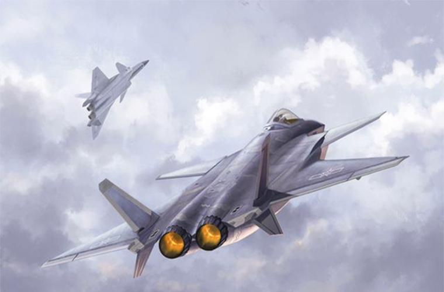
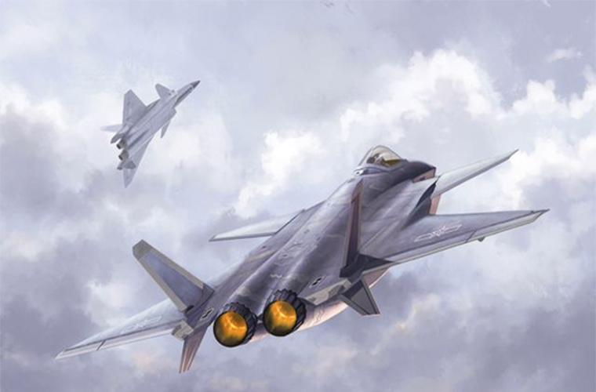

中国建成了包括兵器工业、航空工业、船舶工业、电子工业等一大批军工骨干企业， 中国已成为世界上第三个独立掌握空间出舱关键技术的国家， 这是中国人民攀登世界科技高峰的又一伟大壮举， 是中华民族为人类探索利用外层空间作出的又一卓越贡献。
 


忠实履责，深入实施创新
驱动和军民融合发展战略
5年来，数十艘新型舰艇加入战斗序列，运20、歼20相继服役;新型空空、 空地、地空导弹、先进战略导弹、巡航导弹和新一代武装直升机、新型主战坦克、 北斗卫星导航系统、指挥自动化系统等一大批信息化程度高、 具备世界先进水平的武器装备列装部队，推动我军实现战略转型。
不忘初心，推动国防科技
工业改革发展迈上新台阶
通过研发、设计、试验、生产，推进武器装备体系化、信息化、实战化、自主化发展。 我军装备建设正处于实现跨越式发展的关键时刻，国防科技工业必须加强国防前沿基础、 颠覆性技术和先进工业技术研究，开展国防应用基础研究;探索战略前沿技术， 力争在核、太空、海洋、网络等战略安全领域取得重大突破，在新军事变革中赢得竞争优势。